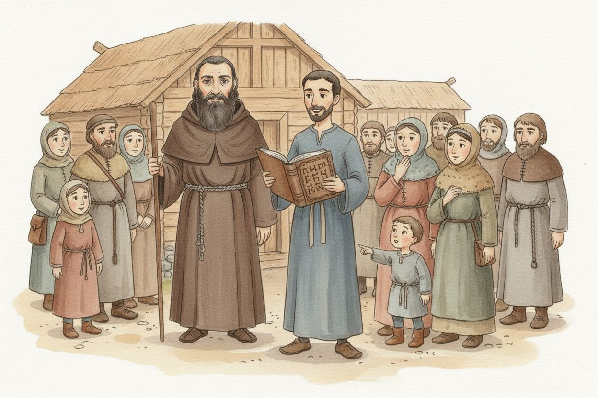
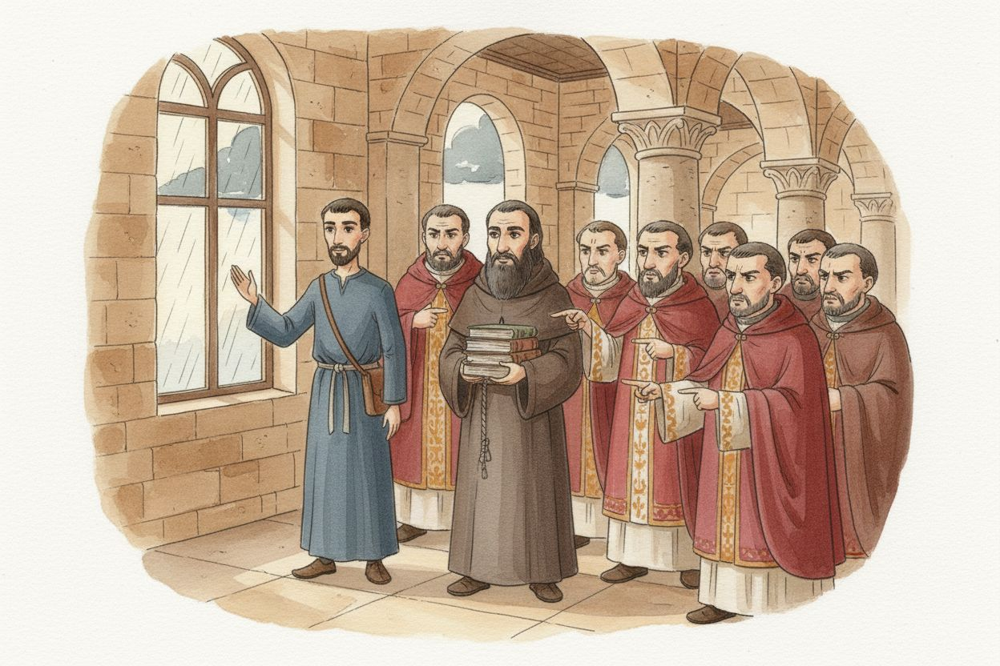
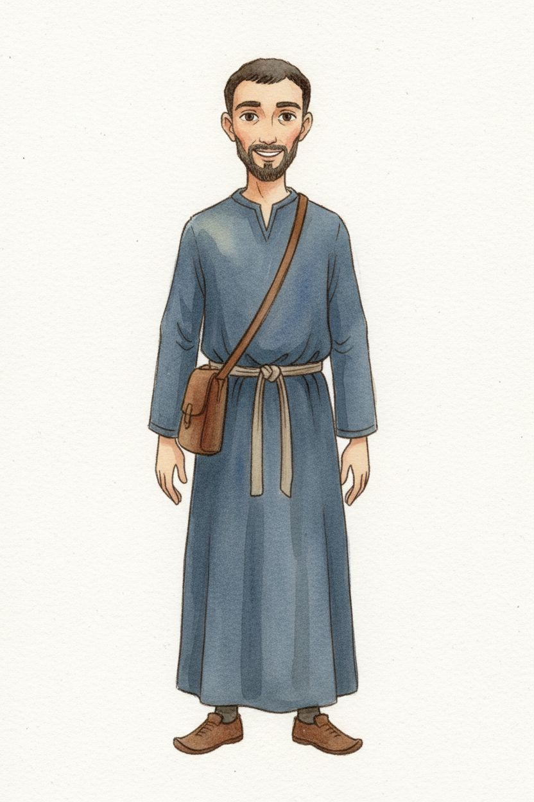
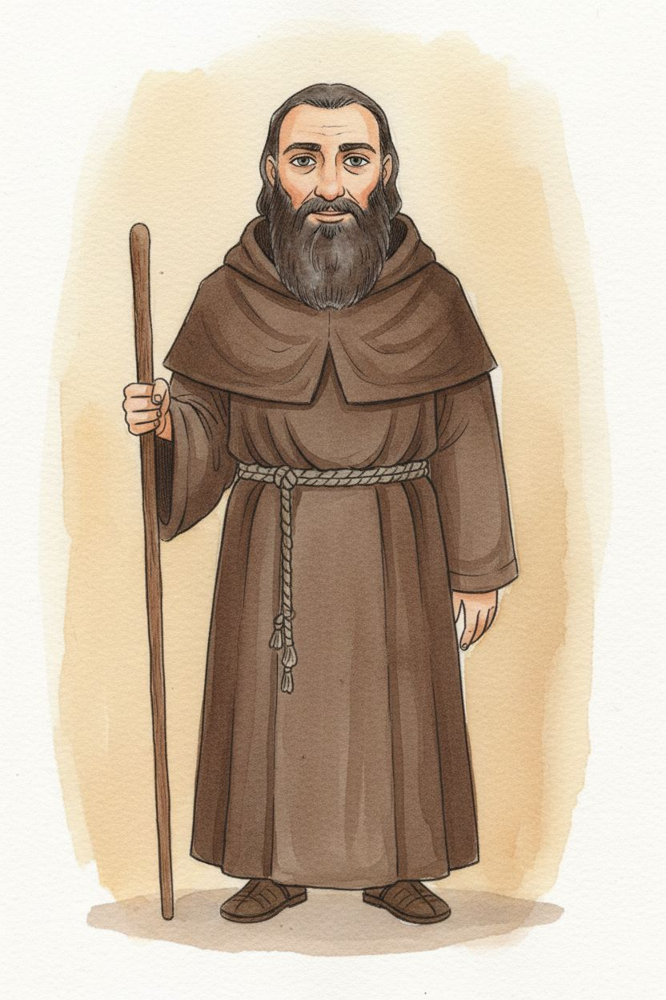

1. Words people understand
nenamalováno


2. Only three languages?
nenamalováno


Postavy v novém stylu




Styl
style: >- Children's book watercolour illustration. Soft transparent watercolour washes in warm earth tones over a fine, light brown-grey ink drawing: the linework is thin and delicate, never heavy black outline. Visible cold-press paper grain through the paint, gentle pigment pooling at the edges of each wash, soft blooms and tonal variation inside every shape, small areas of bare paper left unpainted. The scene sits on plain white paper with a soft irregular painted edge and no frame. Figures drawn simply and a little naively, calm faces, unfussy hands. Period-accurate early medieval Bohemia around 900 AD. palette: - '#f6f1e6' - '#c9a26b' - '#a9713f' - '#8d5a3b' - '#b3564c' - '#6d89a8' - '#8a9a6b' mood: warm, quiet, gentle, unhurried negative: >- No text, no letters, no words, no watermark, no halo, no lettering, no signature, no artist's mark. No heavy black ink outlines, no flat vector fills, no digital gradients, no cel shading, no frame or border box. No stone castles, no plate armour, no gothic architecture — this is 900 AD: timber palisades, wool and linen, simple iron. aspect_ratio: '3:2'